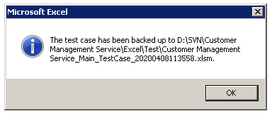

Using Test Template
After knowing the contents in Test Template, this is a sample about using the AlchemyJ testing framework to test the function point in both AlechmyJ studio and Java API. API package needs to be generated by using Generate API function on the AlchemyJ menu. The service needs to be started for testing REST API. The test case preparation and execution are the same for Java API and REST API.
Sample Test Function
The sample function point is to get customer information from DB by keying in the Name. The test data in DB as shown below.

The input parameter is 'name' and the example value is 'CHAN TAI MAN' as defined in the Function Input Parameters section of the model workbook.
{kind=link}
Since the function needs to access DB, it needs to set up the Unit Test Settings in ##JavaApiPackage of the model workbook for testing on Java API. This setting is not required for REST API.
{kind=link}
Create a Test Template
Open the model workbook, go to the AlchemyJ toolbar, click the Generate Test Template on Test tab.
AlchemyJ will prompt a window to select the function point you are going to test. Press 'Shift' to select multiple function points.
{kind=link}
{kind=link}
Specify the file name to save the test case template. You also can specify an existing testing file or current model workbook to save the test case template. When you choose an existing file to create the test case template, it will append the new test worksheets to the selected workbook only. It is recommended to save the test workbook in the same directory of the model workbook.
In the new test workbook, it will create ##Test Run for test execution by default. Test run worksheet will not be added If the test run worksheet exists in the test workbook already. Test case worksheets will be generated according to the API definition. The test case worksheet name is ##Function Point_Java or ##Function Point_REST which depends on the selected package. Since we selected Get Customer and Create Customer function points at Step 2, ##Get_Customer_Java and ##Create_Customer_Java test case worksheets are built in the test workbook.
10 set test cases will be generated in each test case worksheet. The input column has a default value which comes from the example value defined in the model workbook. The number of rows depends on the response data address. For example, if the response data address has 5 rows then each test case will have 5 rows for response data.
{kind=link}
{kind=link}
Update Test Cases
Since the default value is the same for all cases, it needs to update the input according to the test scenarios. You can delete some test cases if the number of test cases is less then 10. Otherwise, all the blank test cases will be marked as 'Passed' and it could affect your analysis on the test execution summary. You can also click on the Test Cases - Append Test Cases on the Test tab to append more cases when needed.
In this sample, it has updated the Function Point Label to 'Scenario1' for further filtering. It has also modified the input to different values and removed the case 5 to case 10.
Now we can click Execute Test Run on the AlchemyJ menu to get the test result run on AlchemyJ Studio. All test cases on the test workbook will be executed on AlchemyJ Studio when nothing has been defined in the Test Case Criteria section of the Test Run worksheet for this case. When there are multiple test run worksheets, it will prompt a window to select the test run worksheet. Each execution can select 1 worksheet only.
The testing result will be put at the Studio Test Result section. You can see the execution result is failed for all cases, it can be ignored as of now since you have not yet key in the expected result.
Now, you need to verify studio test result. Check and modify the model if the testing results are not as expected. Then, it is recommended to regenerate the test case worksheet if there are some modifications to the model workbook. You also can use the quick function Test Cases - Load Test Case to Model to copy the test data to the model workbook to further check why the test result is not as expected.
If the studio results are as expected, click Copy Test Result - Copy Test Result to Empty Expected Result on the AlchemyJ menu. The content of the studio testing result will be copied to both Studio Expected Result and API Expected Result sections for the first time. If there are any changes on the test result and you wish to modify the expected result too, you can also use Copy Test Result - Copy Selected Result to Expected Result to update the expectation for the selected cases.
{kind=link}
{kind=link}
{kind=link}

The Studio Test Result Match and API Test Result Match sections are using formulas to check whether the test result equals to the expected result for each column. You can modify the formula as well if there are some columns that can be ignored or there are some special rules. For example, ignore the difference for data creation date-time.
Done! Now, we have the expected results for both Studio and API.
{kind=link}
Execute Test Case
Go to ##Test Run Worksheet, input the test case criteria for both Alchemy Studio and API.
Input the Function Point Label as 'Scenario1', then all the cases that are just defined will run on both AlchemyJ Studio and API.
Go to the AlchemyJ toolbar and on the Test tab, click on the Execute Test Run . The executed result will be returned to the Test Execution Summary and Test Result sections.
AlchemyJ provides a quick menu on the Test tab, click on the Backup Test Template. It will save the current test file in the same path and append the timestamp in the file name directly.

{kind=link}
{kind=link}